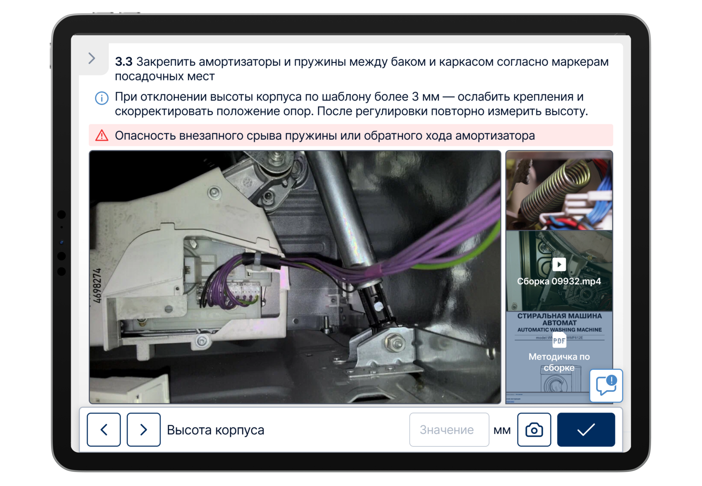
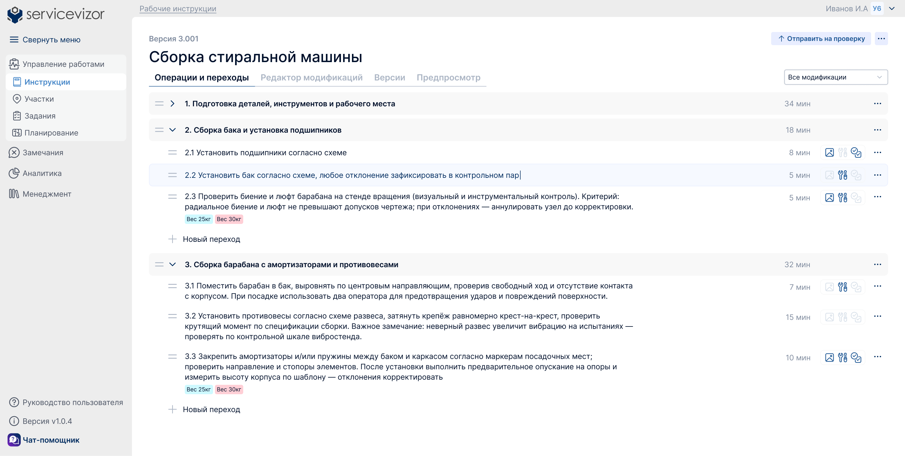
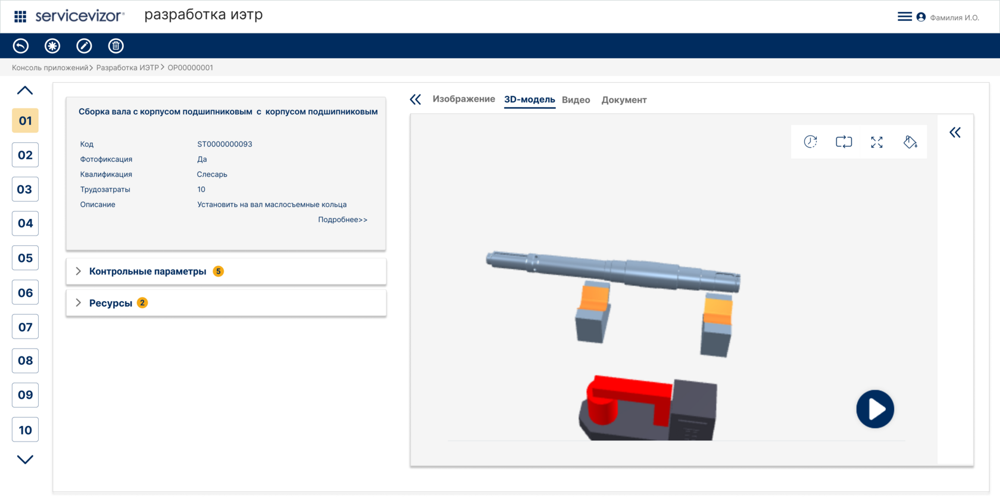
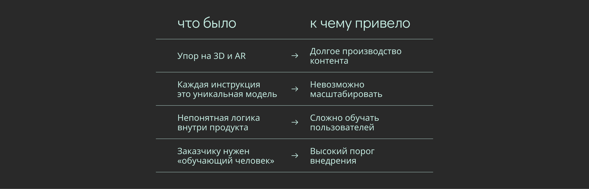
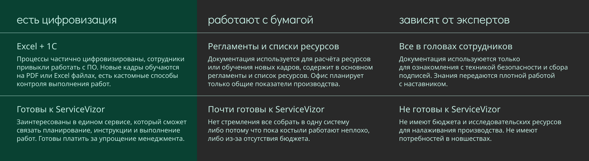
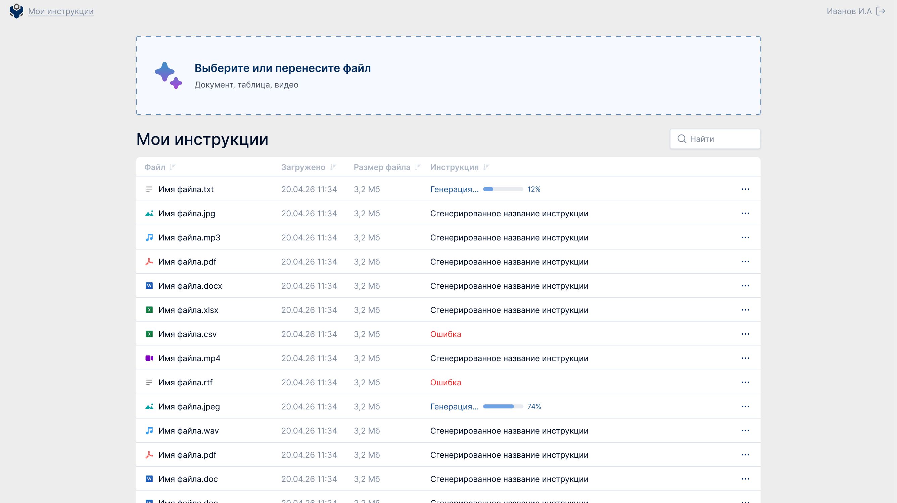
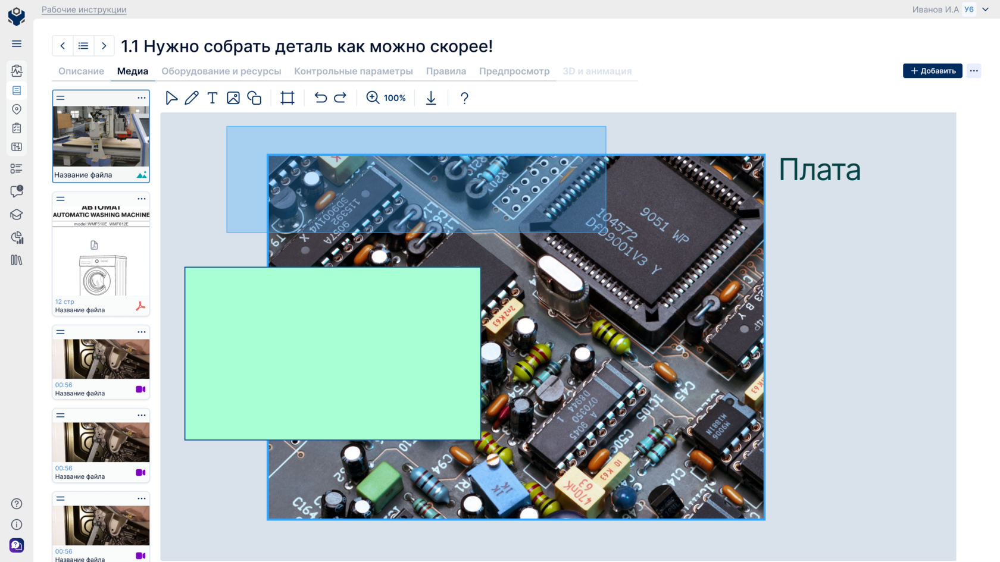
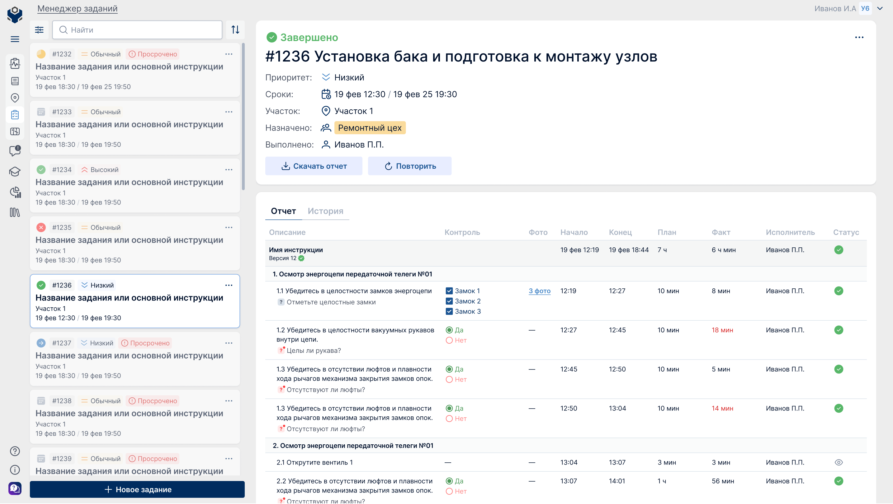
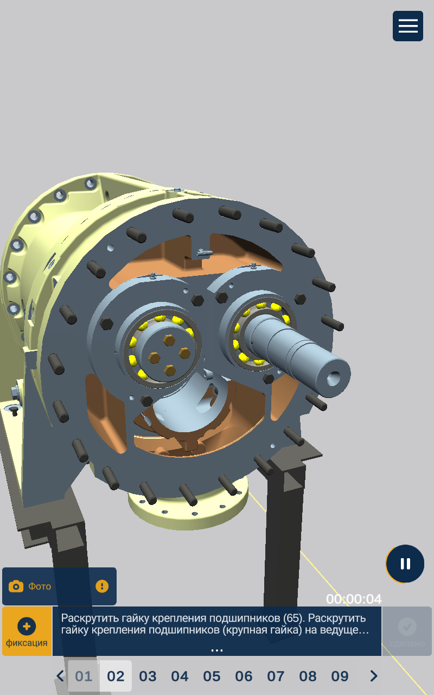
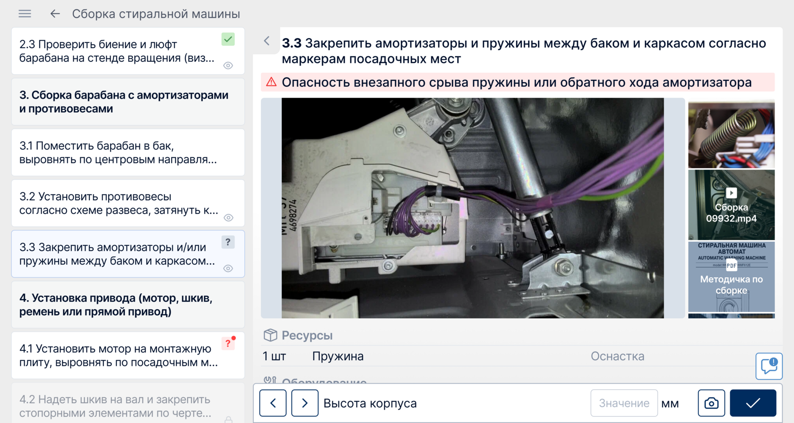

Перезапуск продукта и смена стратегии
Как переход к масштабируемой системе рабочих инструкций привёл к первым долгосрочным контрактам

ServiceVizor — цифровой помощник на производстве.
Продукт состоит из двух взаимосвязанных частей:
- Веб-сервиса для технических специалистов, где создаются рабочие инструкции, планируются и назначаются задания, контролируется ход работ;
- Мобильного приложения для операторов на производстве, в котором сотрудники выполняют задания, отвечают на контрольные вопросы по инструкциям и фиксируют замечания прямо в процессе работы.
Такой подход позволяет связать офисное планирование и реальное выполнение задач на производстве в единую систему. ServiceVizor должен снижать количество ошибок и упрощать коммуникацию между офисом и цехом.
коротко
Первая версия продукта провалилась, и с помощью интервью и переработки концепции мы собрали новый понятный и востребованный продукт.
до/после веб


моя роль и вклад в проект
Я пришла в продукт на этапе, когда первая версия не масштабировалась и требовала полной пересборки. В течение 2 лет я была единственным дизайнером в команде и участвовала во всех ключевых решениях.
Моя зона ответственности:
— участие в проведении UX-исследований, интервью и анализа конкурентов
— участие в формировании продуктовой стратегии и выборе целевой аудитории
— проектирование ключевых флоу (инструкции и рабочие задания)
— обновление визуальной айдентики продукта
— участие в подготовке понятного руководства пользователя, которое отправляется клиентам вместе с демо-доступом.
контекст и проблематика
К моменту моего прихода продукт уже имел первую версию. Она делала акцент на 3D-модели и AR — каждая производственная операция сопровождалась детальной 3D-визуализацией перехода.
На отрисовку нескольких моделей уходили месяцы, а для полноценного покрытия процессов требовались сотни таких моделей. Контракт с первым заказчиком не был продлён.

исследования и переосмысление направления
Перед редизайном нам нужно было понять, какие задачи клиенты действительно хотят решать, за что готовы платить, и что мешает внедрению подобных систем на производстве.
Сложности
Решение о покупке принимают менеджеры, а ежедневно работают с системой операторы и рабочие. Получить доступ к конечным пользователям нам удалось только после появления первого нового лояльного заказчика.
Формат исследований
Я участвовала в проведении и анализе интервью, анализе конкурентных решений, и обработке обратной связи от заказчика и демо-пользователей.
Интервью были полуструктурированными и проходили во время консультаций с демонстрацией продукта. Цель — понять, как устроены процессы на производстве и какие задачи мы могли бы закрыть.
Сегментация целевой аудитории

Ключевые инсайты
— Менеджерам важны контроль и планирование, рабочим – простота и скорость
— Реальным пользователям лень вбивать инструкции с нуля руками
— 3D/AR не нужны опытным работникам цеха — они делают одну и ту же работу много раз и знают детали процесса. Подробные модели могут помогать в обучении новых кадров, но у производств сейчас нет потребности массового найма
— 3D/AR не масштабируются в промышленных масштабах
Вывод: продукт должен быть простым, масштабируемым и быстро внедряемым.
Задачи новой версии и фокус MVP
— коробочная модель вместо кастомной разработки
— универсальная логика процессов
— быстрое внедрение без сложной настройки
— простой и предсказуемый интерфейс
— фокус на реальных производственных задачах
MVP включал два раздела:
- Рабочие инструкции – база знаний и процессов
- Менеджер заданий – управление и контроль выполнения
решения в MVP
Рабочие инструкции: база знаний и процессов


Менеджер заданий: управление и контроль выполнения

решения в пост-MVP
Далее были созданы диаграмма Ганта и аналитика для упрощения планирования — об этом можно почитать в отдельном кейсе.
приложение на планшет
Так изменился основной экран выполнения перехода рабочей инструкции на планшете исполнителя


после перезапуска продукт начал использоваться в реальных производственных процессах
Процесс продаж выстроен так:
первичный контакт → презентация продукта с консультацией → демо-доступ на 1–3 месяца → подписание договора на лицензию.
2
клиента
подписали долгосрочные контракты на лицензирование продукта — ещё на этапе, когда продукт был нестабилен и находился в активной разработке
4
производства
используют продукт в демо-режиме для проверки гипотез и сценариев внедрения
3
потенциальных клиента
сейчас находятся на этапе согласования и подписания долгосрочных контрактов